전산응용토목제도기능사 (2015-07-19 기출문제)
1과목: 토목제도(CAD)
1. 주철근에서 90° 표준갈고리는 구부린 끝에서 철근지름의 최소 몇 배 이상 연장되어야 하는가?
- 10배
- 12배
- 15배
- 20배
(정답률: 77%)

2. 콘크리트의 등가직사각형 응력블록과 관계된 계수 β1은 콘크리트의 압축강도의 크기에 따라 달라지는 값이다. 콘크리트의 압축강도가 38MPa일 경우 β1의 값은?
- 0.65
- 0.68
- 0.78
- 0.85
(정답률: 42%)
3. 콘크리트의 각종 강도 중 크기가 가장 큰 것은? (단, 콘크리트는 보통 강도의 콘크리트에 한한다.)
- 부착강도
- 휨강도
- 압축강도
- 인장강도
(정답률: 80%)
4. 괄호에 들어갈 말이 순서대로 연결된 것은? (단, 순서는 ㄱ-ㄴ-ㄷ)
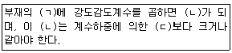
- 소요강도 - 설계강도 - 공칭강도
- 설계강도 - 소요강도 - 공칭강도
- 공칭강도 - 설계강도 - 소요강도
- 설계강도 - 공칭강도 - 소요강도
(정답률: 51%)
5. 철근 콘크리트 구조물을 설계할 때 집중하중 P를 받는 길이 L인 직사각형 보의 중립축에서의 휨 응력 크기는 몇 MPa로 가정하는가?
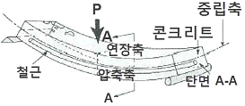
- ０
- PL
- P
- -PL
(정답률: 58%)
6. 단철근 직사각형 보의 높이 d=300㎜, 폭 b=200㎜, 철근 단면적 As=1275mm2일 때, 등가직사각형 응력블록의 깊이 a는? (단, fck=20MPa, fy=400MPa이다.)
- 40㎜
- 80㎜
- 120㎜
- 150㎜
(정답률: 29%)
7. 나선철근의 정착은 나선철근의 끝에서 추가로 최소 몇 회전만큼 더 확보하여야 하는가?
- 1.0 회전
- 1.5 회전
- 2.0 회전
- 2.5 회전
(정답률: 73%)
8. 콘크리트에 대한 설명으로 옳은 것은?
- 시멘트, 잔골재, 굵은 골재, 이 밖에 혼화재료를 섞어 물로 비벼서 만든 것이다.
- 시멘트에 물만 넣어 반죽한 것이다.
- 시멘트와 잔골재를 물로 비벼서 만든 것이다.
- 시멘트와 굵은 골재를 섞어 물로 비벼서 만든 것이다.
(정답률: 81%)
9. 수밀 콘크리트를 만드는데 적합하지 않은 것은?
- 단위수량을 되도록 크게 한다.
- 물-결합재비를 되도록 적게 한다.
- 단위 굵은 골재량을 되도록 크게 한다.
- AE제를 사용함을 원칙으로 한다.
(정답률: 46%)
10. 균형 변형률 상태에서 단철근 직사각형보에서 균형 철근비가 0.0251일 때 압축연단 콘크리트의 변형률은?
- 0.002
- 0.003
- 0.004
- 0.0⑤
(정답률: 78%)
11. 조기 강도가 커서 긴급 공사나 한중 콘크리트에 알맞은 시멘트는?
- 알루미나 시멘트
- 팽창 시멘트
- 플라이 애시 시멘트
- 고로 슬래그 시멘트
(정답률: 53%)
12. 콘크리트의 시방배합에서 잔골재는 어느 상태를 기준으로 하는가?
- 5㎜체를 전부 통과하고 표면건조포화상태인 골재
- 5㎜체를 전부 통과하고 공기중건조상태인 골재
- 5㎜체를 전부 남고 표면건조포화상태인 골재
- 5㎜체를 전부 남고 공기중건조상태인 골재
(정답률: 71%)
13. 450mm×450mm의 띠철근압축부재에 축방향 철근으로 D25(공칭지름 25.4mm)를 사용하고 굵은골재의 최대치수가 25mm 일 때 이 기둥에 대한 축방향 철근의 순간격은 최소 얼마 이상이어야 하는가?
- 25mm 이상
- 30mm 이상
- 35mm 이상
- 40mm 이상
(정답률: 40%)
14. 지간 2m의 캔틸레버보가 보 전체에 걸쳐 고정하중 20kN/m, 활하중 30kN/m,의 등분포 하중을 받고 있다. 이 보의 계수휨모멘트(Mu)는?(오류 신고가 접수된 문제입니다. 반드시 정답과 해설을 확인하시기 바랍니다.)
- 18kN·m
- 72kN·m
- 100kN·m
- 144kN·m
(정답률: 50%)
15. 콘크리트의 피복두께에 대한 정의로 옳은 것은?
- 콘크리트 표면과 그에 가장 멀리 배근된 철근 중심 사이의 콘크리트 두께
- 콘크리트 중심과 그에 가장 가까이 배근된 철근 중심 사이의 콘크리트 두께
- 콘크리트 표면과 그에 가장 멀리 배근된 철근 표면 사이의 콘크리트 두께
- 콘크리트 표면과 그에 가장 가까이 배근된 철근 표면 사이의 최단거리
(정답률: 58%)
16. 철근의 이음에 대한 설명으로 옳은 것은?
- 철근은 항상 이어서 사용해야 한다.
- 철근의 이음부는 최대 인장력 발생지점에 설치한다.
- 철근의 이음은 한 단면에 집중시키는 것이 유리하다.
- 철근의 이음에는 겹침 이음, 용접 이음 또는 기계적 이음 등이 있다.
(정답률: 77%)
17. 철근의 정착 길이를 결정하기 위하여 고려해야 할 조건이 아닌 것은?
- 철근의 지름
- 철근의 배근위치
- 콘크리트의 종류
- 굵은 골재의 최대치수
(정답률: 46%)
18. 강도 설계법에서 일반적으로 사용되는 철근의 탄성계수(Es) 표준값은?
- 150000MPa
- 200000MPa
- 230000MPa
- 280000MPa
(정답률: 60%)
19. 공기연행(AE) 콘크리트의 특징으로 옳지 않은 것은?
- 내구성과 수밀성이 개선된다.
- 워커빌리티가 저하된다.
- 동결융해에 대한 저항성이 개선된다.
- 강도가 저하된다.
(정답률: 61%)
20. 다음 시멘트 중에서 수화열이 적고, 해수에 대한 저항성이 커서 댐이나 방파제 공사에 적합한 것은?
- 조강포틀랜드 시멘트
- 플라이 애시 시멘트
- 알루미나 시멘트
- 팽창 시멘트
(정답률: 49%)
2과목: 철근콘크리트
21. 1방향 슬래브의 최대 휨 모멘트가 일어나는 단면에서 정철근 및 부철근의 중심 간격으로 옳은 것은?
- 슬래브 두께의 2배 이하이어야 하고, 또한 200mm 이하로 하여야 한다.
- 슬래브 두께의 2배 이하이어야 하고, 또한 300mm 이하로 하여야 한다.
- 슬래브 두께의 3배 이하이어야 하고, 또한 200mm 이하로 하여야 한다.
- 슬래브 두께의 3배 이하이어야 하고, 또한 300mm 이하로 하여야 한다.
(정답률: 73%)
22. 인장지배단면에 대한 강도감소계수는?
- 0.85
- 0.80
- 0.75
- 0.70
(정답률: 52%)
23. 독립 확대 기초의 크기가 3m×4m이고 하중의 크기가 600kN 일 때, 이 기초에 발생하는 지지력의 크기는?
- 30kN/m2
- 50kN/m2
- 100kN/m2
- 150kN/m2
(정답률: 64%)
24. 토목 구조물의 일반적인 특징이 아닌 것은?
- 다량으로 생산한다.
- 구조물의 수명이 길다.
- 구조물의 규모가 크다.
- 건설에 많은 시간과 비용이 든다.
(정답률: 83%)
25. 콘크리트에 일어날 수 있는 인장 응력을 상쇄하기 위하여 계획적으로 압축 응력을 준 콘크리트를 무엇이라 하는가?
- 강 구조물
- 합성 구조물
- 철근 콘크리트
- 프리스트레스트 콘크리트
(정답률: 71%)
26. 옹벽에 작용하는 수평력 1000kN에 대하여 옹벽의 활동에 대한 안정을 확보하기 위한 최소 저항력은?
- 500kN
- 1000kN
- 1500kN
- 2000kN
(정답률: 55%)
27. 1방향 슬래브의 최소 두께는 얼마 이상으로 하여야 하는가? (단, 콘크리트구조기준에 따른다.)
- 100㎜
- 200㎜
- 300㎜
- 400㎜
(정답률: 62%)
28. 포스트 텐션 방식에 있어서 PS 강재를 콘크리트와 부착하기 위하여 시스 안에 시멘트 풀이나 모르타르를 주입하는 작업을 무엇이라 하는가?
- 앵커
- 라이닝
- 록 볼트
- 그라우팅
(정답률: 82%)
29. 철근 콘크리트를 널리 이용하는 이유가 아닌 것은?
- 검사 및 개조, 해체가 매우 쉽다.
- 철근과 콘크리트는 부착이 매우 잘된다.
- 콘크리트 속에 묻힌 철근은 녹이 슬지 않는다.
- 철근과 콘크리트는 온도에 대한 열팽창 계수가 거의 같다.
(정답률: 77%)
30. 활하중에 해당하는 것은?
- 자동차 하중
- 구조물의 자중
- 토압
- 수압
(정답률: 65%)
31. 겹치기 이음 또는 T이음에 주로 사용되는 용접으로 용접할 모재를 겹쳐서 그 둘레를 용접하거나, 2개의 모재를 T형으로 하여 모재 구석에 용착 금속을 채우는 용접은?
- 홈 용접(Groove Welding)
- 필릿 용접(Filet Welding)
- 슬롯 용접(Solt Welding)
- 플러그 용접(Plug Welding)
(정답률: 57%)
32. 축방향 철근에 직교하여 적당한 간격으로 철근을 감아 주근을 보강하고, 좌굴을 방지하도록 하는 기둥은?
- 합성 기둥
- 띠철근 기둥
- 나선 철근 기둥
- 프리스트레스트 기둥
(정답률: 57%)
33. 토목 구조물의 기능에 대한 설명으로 옳은 것은?
- 기초 : 슬래브를 지지하며 작용하는 하중을 기둥이나 교각에 전달한다.
- 슬래브 : 기둥, 교각 등에 작용하는 상부 구조물의 하중을 지반에 전달한다.
- 보 : 구조물에 작용하는 직접 하중을 받아 지지하는 슬래브에 하중을 전달한다.
- 기둥 : 보를 지지하고, 보를 통하여 전달된 하중이나 고정하중을 기초에 전달한다.
(정답률: 55%)
34. 다음 보기의 특징이 설명하고 있는 교량 형식은?
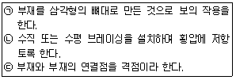
- 단순교
- 아치교
- 트러스교
- 판형교
(정답률: 75%)
35. 교량의 분류 방법과 교량의 연결이 옳은 것은?
- 사용 재료에 따른 분류 - 연속교
- 사용 용도에 따른 분류 - 콘크리트교
- 통로의 위치에 따른 분류 - 중로교
- 주형의 구조 형식에 따른 분류 - 고가교
(정답률: 60%)
36. 정투상법 중 제3각법에 대한 설명으로 옳지 않은 것은?
- 눈→투상면→물체 순서로 놓는다.
- 제3면각 안에 물체를 놓고 투상하는 방법이다.
- 투상선이 투상면에 대하여 수직으로 투상한다.
- 정면을 기준으로 하여 좌우, 상하에서 본 모양을 반대 위치에 그린다.
(정답률: 65%)
37. 그림에서 제3각법에 따라 도면을 작성할 때 평면도는?
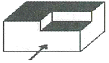
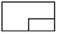
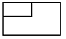
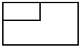
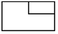
(정답률: 78%)
38. 치수 기입의 원칙에 어긋나는 것은?
- 치수의 중복 기입은 피해야 한다.
- 치수는 계산할 필요가 없도록 기입해야 한다.
- 주투상도에는 가능한 치수기입을 생략하여야 한다.
- 도면에 길이의 크기와 자세 및 위치를 명확하게 표시해야 한다.
(정답률: 76%)
39. 건설재료 단면의 경계 표시 기호 중에서 지반면(흙)을 나타내는 것은?
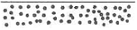
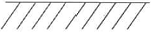
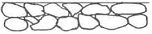
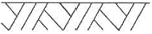
(정답률: 85%)
40. 치수선에 대한 설명으로 옳지 않은 것은?
- 치수선은 표시할 치수의 방향에 평행하게 긋는다.
- 치수선은 가는 파선을 사용하여 긋는다.
- 일반적으로 불가피한 경우가 아닐 때에는 치수선은 다른 치수선과 서로 교차하지 않도록 한다.
- 협소하여 화살표를 붙일 여백이 없을 때에는 치수선을 치수보조선 바깥쪽에 긋고 내측을 향하여 화살표를 붙인다.
(정답률: 71%)
3과목: 토목일반구조
41. 건설 재료의 단면 표시 중 잡석을 나타낸 것은?
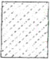
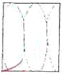
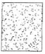
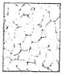
(정답률: 80%)
42. 도로 설계에서 종단 측량 결과로서 종단면도에 기입할 사항이 아닌 것은?
- 면적
- 거리
- 지반고
- 계획고
(정답률: 45%)
43. 다음 중 블록의 단면 표시로 옳은 것은?
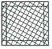
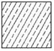
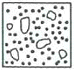
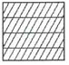
(정답률: 66%)
44. 투상도에서 물체 모양과 특징을 가장 잘 나타낼 수 있는 면은 어느 도면으로 선정하는 것이 좋은가?
- 정면도
- 평면도
- 배면도
- 측면도
(정답률: 55%)
45. 각봉의 절단면을 바르게 표시한 것은?
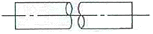
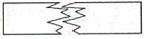
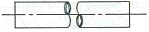
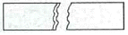
(정답률: 56%)
46. 토목 CAD의 이용효과에 대한 설명으로 옳지 않은 것은?
- 모듈화된 표준도면을 사용할 수 있다.
- 도면의 수정이 용이하다.
- 입체적 표현이 불가능 하나, 표현 방법이 다양하다.
- 다중작업(Multi-tasking)이 가능하다.
(정답률: 79%)
47. CAD 시스템의 입력장치가 아닌 것은?
- 마우스
- 디지타이저
- 키보드
- 플로터
(정답률: 72%)
48. 치수 기입 등에 대한 설명으로 옳지 않은 것은?
- 치수선에는 분명한 단발 기호(화살표)를 표시한다.
- 치수 보조선은 대응하는 물리적 길이에 수직으로 그리는 것이 좋다.
- 치수 수치는 도면의 위 또는 왼쪽으로 읽을 수 있도록 표시하여야 한다.
- 일반적으로 치수 보조선과 치수선이 다른 선과 교차하지 않도록 한다.
(정답률: 44%)
49. 한국 산업 표준(KS)에서 원칙적으로 하는 정투상도 그리기 방법은?
- 제1각법
- 제3각법
- 제5각법
- 다각법
(정답률: 83%)
50. 중앙처리장치와 주기억장치 사이에서 실행 속도를 높이기 위해 사용되는 접근속도가 빠른 기억 장치는?
- 캐시메모리(Cache Memory)
- DRAM(Dynamic RAM)
- SRAM(Static RAM)
- ROM(Read Only Memory)
(정답률: 64%)
51. 도면의 작성 방법에 대한 설명으로 틀린 것은?
- 단면도는 실선으로 주어진 치수대로 정확히 그린다.
- 단면도에 배근될 철근 수량을 정확히 하고, 철근 간경이 벗어나지 않도록 한다.
- 단면도에 표시된 철근 단면은 원형으로 내부를 칠하지 않는 것이 원칙이다.
- 철근 치수 및 철근기호를 표시하고, 누락되지 않도록 한다.
(정답률: 77%)
52. 한 도면에서 두 종류의 이상의 선이 같은 장소에 겹치게 될 때 우선순위로 옳은 것은?
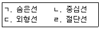
- ㄹ - ㄱ - ㄷ - ㄴ
- ㄷ - ㄱ - ㄹ - ㄴ
- ㄱ - ㄴ - ㄷ - ㄹ
- ㄷ - ㄱ - ㄴ - ㄹ
(정답률: 67%)
53. 척도의 종류에 해당하지 않는 것은?
- 배척
- 축척
- 현척
- 외척
(정답률: 86%)
54. 보기의 철강 재료 기호 표시에서 재질을 나타내는 기호 등을 표시하는 부분은?
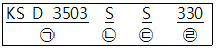
- ㉠
- ㉡
- ㉢
- ㉣
(정답률: 57%)
55. 어떤 재료의 치수가 2-H 300×200×9×12×1000로 표시되었을 때 플렌지 두께는?
- 300㎜
- 200㎜
- 12㎜
- 9㎜
(정답률: 53%)
56. 도면이 구비하여야 할 일반적인 기본 요건으로 옳은 것은?
- 분야별 각기 독자적인 표현 체계를 가져야 한다.
- 기술의 국제 교류의 입장에서 국제성을 가져야 한다.
- 기호의 다양성과 제작자의 특성을 잘 반영하여야 한다.
- 대상물의 임의성을 부여하여야 한다.
(정답률: 59%)
57. 한국 산업 표준과 국제 표준화 기구의 기호가 순서대로 연결된 것은?
- ISO - ASTM
- KS - ISO
- KS - ASTM
- ISO - JIN
(정답률: 84%)
58. 대상물의 보이지 않는 부분의 모양을 표시하는 선은?
- 굵은 실선
- 가는 실선
- 1점 쇄선
- 파선
(정답률: 84%)
59. 제도 통칙에서 한글, 숫자 및 영자에 해당하는 문자의 선 굵기는 문자 크기의 호칭에 대하여 얼마로 하는 것이 바람직한가?
- 1/2
- 1/5
- 1/9
- 1/13
(정답률: 70%)
60. 표현 형식에 따라 분류한 도면으로 볼 수 없는 것은?
- 일반도
- 외관도
- 시공도
- 구조선도
(정답률: 44%)
따라서, 갈고리 부분까지의 길이는 철근지름의 최소 몇 배 이상 연장되어야 한다. 이때, 90° 표준갈고리의 길이는 철근지름의 12배 이상이어야 한다. 이는 갈고리 부분까지의 길이가 충분하게 연장되어 갈고리가 제대로 사용될 수 있도록 하기 위함이다.